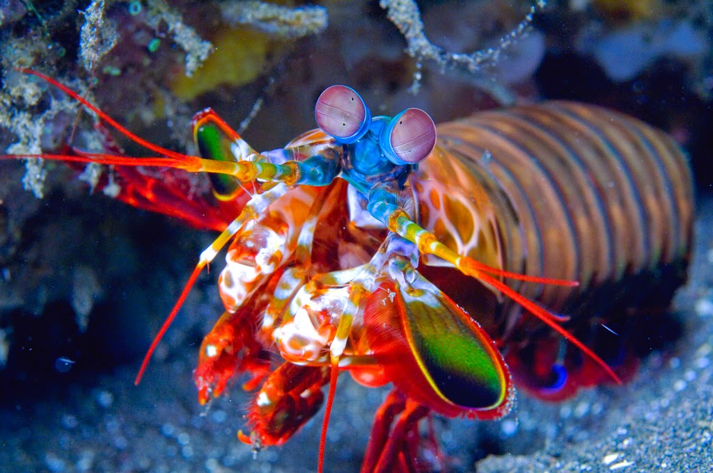

Fatos sobre o Stomatopoda
Descrição:

Stomatopoda (Odontodactylus scyllarus), chamados popularmente de tamarutacas ou de lacraias-do-mar no Brasil,
é uma ordem de crustáceos marinhos da subclasse Hoplocarida, que agrupa cerca de 400 espécies,
caracterizadas principalmente pela morfologia da segunda pata torácica, que é modificada em apêndice subquelado,
lembrando uma pata de louva-a-deus.
Visão mais complexa do mundo animal

Esses animais possuem o mais complexo sistema de visão de cores do mundo animal, pois enxergam 12 cores primárias, correspondentes aos 12 pigmentos distintos presentes em sua retina. Nossos olhos possuem três tipos desses receptores - que correspondem à luz azul, verde e vermelha -, que nos permitem perceber o espectro de cores que vemos. Os cães contam com apenas dois tipos de cones (verde e azul), e é por isso que eles vêm tons de azul, verde e um pouco de amarelo. Muitos anfíbios, répteis, aves e insetos possuem quatro tipo de cones, o que significa que espécies dessas classes conseguem ver cores que o nosso cérebro é incapaz de processar. Algumas espécies específicas de borboletas e possivelmente pombos possuem cinco cones de percepção de cor, o que aumenta ainda mais a quantidade de pigmentos que eles são capazes de perceber. O sistema de visão dos estomatópodes possui doze cones sensíveis à luz e outros quatro que filtram a luz (16 cones no total), o que lhes permite ver cores polarizadas e imagens multiespectrais.
O ataque mais poderoso da natureza
Os cientistas descobriram que entre os Camarões, o Louva-a-deus pode lançar o mais poderoso e mais rápido golpe na natureza.
Eles atacam com a força de uma bala de arma quebrando conchas e até mesmo copos de aquário.
À medida que os membros se desenrolam, eles aceleram a 10,000 vezes mais do que a gravidade e a velocidade máxima atinge
50 milhas por hora, essas festas são surpreendentes devido à resistência da água.